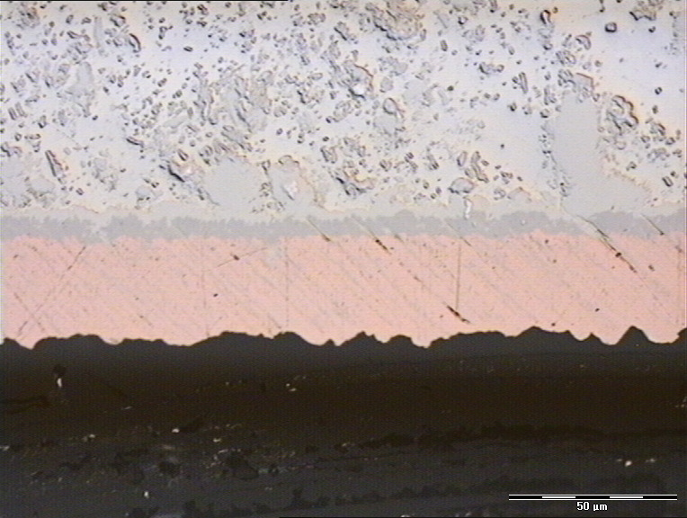
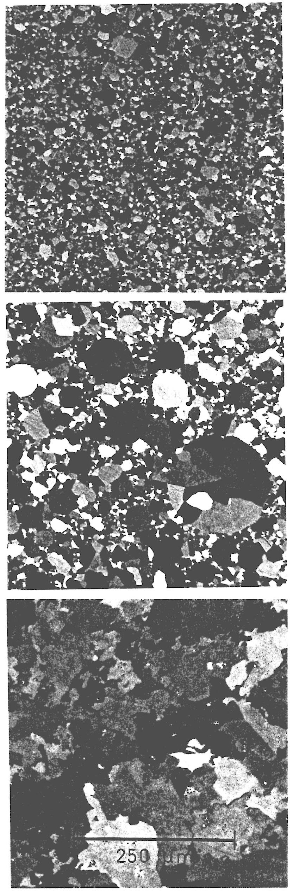
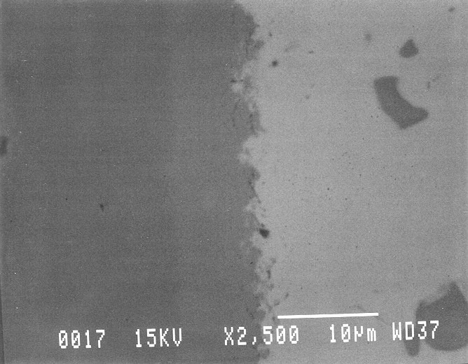
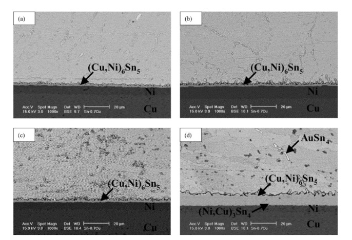
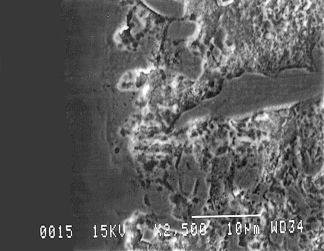
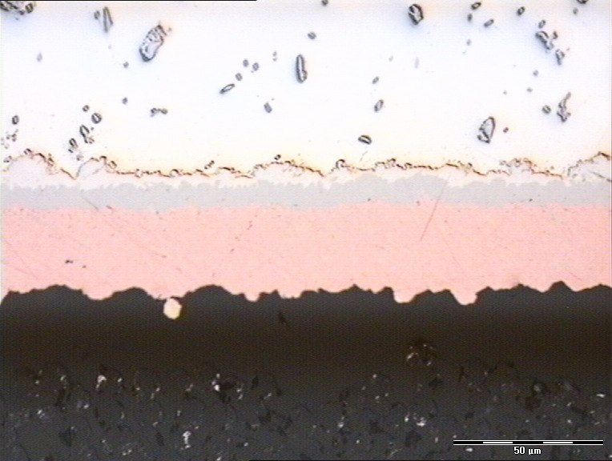
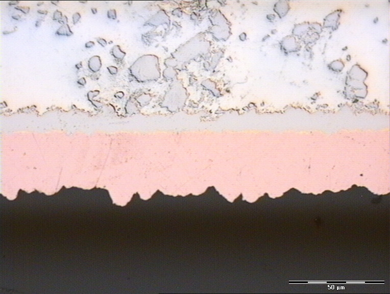
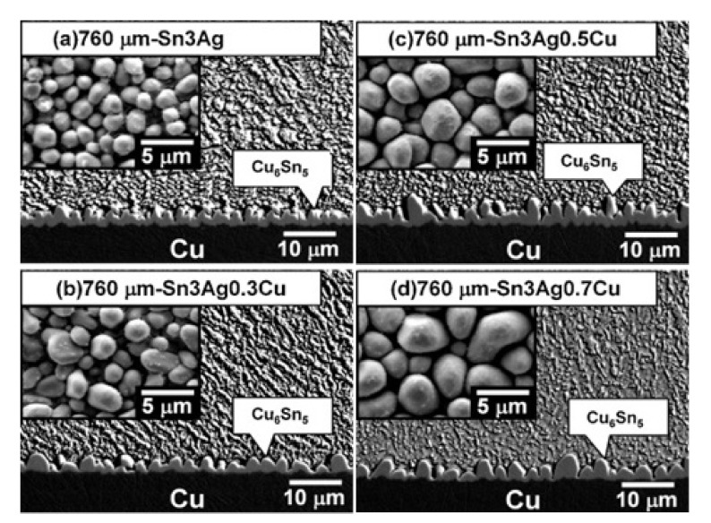

Joint Metallurgy
What actually happens when solder bonds to copper — at the atomic level. This is why soldering works, and why it sometimes doesn't.
It's Not Glue
Soldering is not gluing two metals together. It's creating a new material at the interface — an intermetallic compound (IMC) that is chemically distinct from both the solder and the copper. This IMC layer is the actual bond.
The Three Layers
A cross-section of a good solder joint shows three distinct zones:
- Bulk solder — the SAC305 alloy you applied. This is the visible fillet. It's a tin-silver-copper solid solution.
- Intermetallic compound (IMC) layer — a thin band at the interface, typically 1-3 μm thick. This is where tin atoms from the solder have diffused into the copper and formed new crystalline compounds.
- Base metal — the copper pad/trace beneath. Unaltered except right at the IMC boundary.
Micrograph: The three layers of a solder joint cross-section

NIST Materials Science and Engineering Division. Public domain (US government work).
Intermetallic Compounds
When molten tin contacts copper, two IMCs form in sequence:
| Compound | Formula | Where It Forms | Properties |
|---|---|---|---|
| Cu₆Sn₅ | η phase | At the solder/copper interface. Forms first. | Scallop-shaped grains. Relatively ductile. This is the main IMC in a fresh joint. |
| Cu₃Sn | ε phase | Between Cu₆Sn₅ and the copper. Forms later, grows with aging. | Flat, planar layer. Brittle. Source of Kirkendall voids. |
Micrograph: Cu₆Sn₅, Cu₃Sn, and Ni₃Sn₄ grain structure (crossed polarizers)

NIST Metallurgy Division. Public domain (US government work).
How the Bond Forms
- Wetting — molten solder contacts the flux-cleaned copper surface. Tin atoms begin to dissolve copper.
- Dissolution — copper atoms from the pad dissolve into the molten solder at the interface. Rate depends on temperature and time.
- Nucleation — Cu₆Sn₅ crystals nucleate at the interface where copper concentration is highest.
- Growth — the Cu₆Sn₅ layer grows as more copper diffuses through it. The layer is scallop-shaped, with individual grains.
- Solidification — when the solder cools below liquidus, the bulk solder freezes. The IMC layer is already solid (it forms during reflow while the solder is still liquid).
- Aging — over time (and accelerated by heat), a Cu₃Sn layer grows between the Cu₆Sn₅ and the copper. This is the long-term reliability concern.
SEM: Cu₆Sn₅ scallops at the solder/copper interface (2,500×)

NIST Materials Science and Engineering Division. Public domain (US government work).
The Goldilocks Problem: IMC Thickness
You need some IMC — it's the bond. But too much is destructive.
| IMC Thickness | Quality | How You Get There |
|---|---|---|
| <0.5 μm | Insufficient bond | Not enough heat or time. Cold joint. The solder is sitting on the copper without a proper metallurgical bond. |
| 1-3 μm | Optimal | Proper reflow profile. Good wetting. Strong, ductile bond. |
| 3-5 μm | Acceptable but aging | Long TAL, high peak temp, or the joint has been thermally aged. |
| >5 μm | Brittle, failure-prone | Excessive reflow (too hot, too long), multiple rework cycles, or years of operation at elevated temperature. |
IMC Growth Rate
IMC growth follows a parabolic law — it slows down as the layer gets thicker (diffusion has to cross a longer distance). The growth rate is governed by the Arrhenius equation:
thickness = √(D₀ × exp(-Ea/kT) × t)
where Ea is the activation energy, T is temperature, and t is time.
| IMC System | Activation Energy | Practical Meaning |
|---|---|---|
| Cu/SAC305 | 0.74 eV | Moderate growth rate. Well-studied. |
| Cu/Sn-3.5Ag | 0.85 eV | Slightly slower growth. |
| Cu/Sn-0.7Cu | 0.68 eV | Faster growth — less margin. |
| Cu/Sn-9Zn | 0.35 eV | Much faster growth — zinc accelerates diffusion. |
At room temperature, IMC growth is negligible over the product lifetime. At 100-125°C (typical for automotive or industrial electronics running hot), growth becomes significant over years. This is why high-reliability standards care about initial IMC thickness — a joint that starts at 3 μm after reflow may reach 5+ μm after years of thermal aging.
SEM: IMC layer growth under thermal aging (70°C → 170°C)

Cheng et al. 2022, Materials 15:1451. CC BY 4.0.
Kirkendall Voiding
As Cu₃Sn grows at the copper interface, copper atoms diffuse out faster than tin atoms diffuse in. This imbalance leaves vacancies behind — tiny voids at the Cu₃Sn/Cu boundary.
- These voids coalesce over time into a porous layer
- The voided layer weakens the bond mechanically
- In extreme cases (many rework cycles + thermal aging), the voids can form a continuous crack plane
- This is one reason why rework cycles are limited to 3 — each cycle grows the IMC and the Kirkendall void zone
SEM: IMC/copper interface detail (2,500×)

NIST Materials Science and Engineering Division. Public domain (US government work).
Thermal Cycling Fatigue
The most common failure mode for solder joints in the field. Every temperature cycle (on/off, day/night, seasonal) stresses the joint:
- Different materials have different coefficients of thermal expansion (CTE):
- Copper pad: ~17 μm/m/°C
- SAC305 solder: ~21 μm/m/°C
- FR4 board: ~14-17 μm/m/°C (x/y), ~70 μm/m/°C (z)
- Silicon die (inside IC): ~2.6 μm/m/°C
- These CTE mismatches create shear stress at the solder joint during every temperature excursion
- Cracks initiate at the weakest point — usually at the IMC/bulk solder interface
- Cracks propagate with each cycle until the joint opens
The number of cycles to failure is related to the strain range per cycle by the Coffin-Manson equation. For SAC305, the fatigue exponent is typically 0.5-0.7, meaning that halving the temperature swing roughly quadruples the fatigue life. This is why automotive under-hood electronics (large ΔT) use SAC387 (better fatigue resistance) while consumer electronics (small ΔT) use SAC305.
What a Cross-Section Tells You
Metallographic cross-sections are the ultimate quality check. Here's what to look for:
| Feature | Good | Bad |
|---|---|---|
| IMC layer | Thin (1-3 μm), continuous, uniform scallops | Thick (>5 μm), irregular, or absent in spots |
| Bulk solder | Dense, minimal voids | Large voids (>25% of joint area per IPC) |
| Solder/pad interface | Clean IMC boundary, no gaps | Kirkendall voids, delamination, cracks |
| Grain structure | Fine, equiaxed grains (fast cooling) | Large columnar grains (slow cooling) |
| Wetting | Solder conforms to pad geometry | Gaps between solder and pad edges (dewetting) |
Micrograph: IMC thickness varies with alloy and reflow conditions


NIST Materials Science and Engineering Division. Public domain (US government work).
SEM: Cu₆Sn₅ scallop morphology across SAC alloy compositions

Cheng et al. 2022, Materials 15:1451. CC BY 4.0.
No — this is for process development and failure analysis. For everyday work, visual inspection and electrical testing are sufficient. But understanding what's inside the joint helps you understand why the visual criteria (wetting angle, fillet shape) matter — they're proxies for the metallurgy you can't see.
Surface Finish and Metallurgy
Everything above assumes solder on bare copper. But most PCBs have a surface finish that changes the metallurgy at the interface. The finish determines which IMC forms, how fast it grows, and what failure modes are possible.
| Finish | Interface IMC | Solderability | Shelf Life | Key Concern |
|---|---|---|---|---|
| Bare Copper | Cu₆Sn₅ → Cu₃Sn | Excellent (when fresh) | Hours to days | Oxidizes immediately. Must solder same day or protect with nitrogen/desiccant. |
| HASL (SnPb or lead-free) | Cu₆Sn₅ (under the existing solder layer) | Excellent | ~12 months | Uneven surface — not suitable for fine-pitch (<0.5mm). Being phased out. |
| OSP | Cu₆Sn₅ → Cu₃Sn (same as bare Cu) | Good | ~6 months | Organic coating burns off during reflow, exposing clean copper. Sensitive to handling — fingerprints break through. |
| ENIG | Ni₃Sn₄ (not Cu₆Sn₅) | Good | ~12 months | Different IMC system. Black pad risk. See below. |
| ENEPIG | Ni₃Sn₄ (with Pd interlayer) | Very good | ~12 months | Palladium barrier mitigates black pad. More expensive than ENIG. |
| Immersion Silver | Cu₆Sn₅ (silver dissolves into solder) | Good | ~6 months | Silver tarnishes in sulfur-containing environments. Don't store near cardboard or rubber. |
| Immersion Tin | Cu₆Sn₅ (tin-on-copper directly) | Good | ~6 months | Tin whisker risk on the finish itself. See Tin Whiskers. |
ENIG: A Different Metallurgy
ENIG (Electroless Nickel / Immersion Gold) is one of the most common lead-free finishes. The gold layer is thin (0.05-0.1 μm) — it's there to protect the nickel from oxidation, not to participate in the joint. During soldering, the gold dissolves into the solder almost instantly, and the solder bonds to the nickel layer underneath.
This changes the metallurgy fundamentally:
- Different IMC: instead of Cu₆Sn₅, the interface forms Ni₃Sn₄ — a nickel-tin intermetallic. This is a different crystal structure with different mechanical properties.
- Slower IMC growth: Ni₃Sn₄ grows more slowly than Cu₆Sn₅ at the same temperature. The nickel acts as a diffusion barrier — this is actually a feature, not a bug. It's why ENIG boards survive multiple rework cycles better than bare copper.
- No Kirkendall voiding: the Cu₃Sn layer that causes Kirkendall voids on copper doesn't form on nickel. One less failure mode.
- Different fracture behavior: Ni₃Sn₄ is more brittle than Cu₆Sn₅. Under thermal cycling, cracks tend to propagate along the Ni₃Sn₄ layer rather than through the bulk solder. The failure mode shifts from ductile fatigue to brittle interface fracture.
Black Pad Syndrome
The most feared ENIG defect. Black pad is a corrosion failure of the nickel layer during the ENIG plating process — not during soldering. It makes joints that look fine but are metallurgically weak or completely unbonded.
The mechanism:
- During immersion gold plating, the gold deposition is a displacement reaction — gold ions replace nickel atoms at the surface
- If the nickel layer has defects (poor phosphorus content, grain boundary weakness), the gold attack penetrates along grain boundaries deep into the nickel
- This leaves a corroded, phosphorus-enriched nickel surface that solder cannot form IMC with
- The gold dissolves into the solder normally, exposing the damaged nickel. Solder sits on top without a proper metallurgical bond.
- The joint looks visually acceptable — correct fillet shape, apparently wetted — but has near-zero pull strength
You can't see black pad from the outside. You discover it when:
- A BGA lifts off with zero resistance during rework — the pads underneath are dark gray/black
- Joints fail in the field under minimal stress
- Cross-sectioning reveals a gap where the IMC layer should be
Black pad is a PCB fabrication defect — not a soldering defect. You can't fix it with better flux, more heat, or better technique. If you encounter it:
- It affects specific pads, not the whole board — the corrosion is local to areas where the nickel was vulnerable
- Multiple boards from the same lot will show the same pattern
- The fix is to reject the PCB lot and work with the fab on their ENIG process
- ENEPIG (with a palladium interlayer between nickel and gold) was developed specifically to eliminate black pad — the palladium deposits without attacking the nickel
Gold Embrittlement
A separate problem from black pad. When gold dissolves into solder (as it does during every ENIG reflow), the gold concentration in the joint matters:
- Below ~3 wt% Au: no significant effect on joint properties
- Above ~3 wt% Au: AuSn₄ intermetallic precipitates form in the bulk solder, embrittling the joint
- The thin gold on ENIG (0.05-0.1 μm) dissolves harmlessly — there's not enough gold to cause problems
- The risk comes from: thick gold plating on connector pins, gold wire bonds, or gold-plated component leads where much more gold enters the joint
- Multiple rework cycles on ENIG boards are safe — the gold is consumed on the first reflow
Bismuth Solders: The Low-Temp Tradeoff
Sn42/Bi58 melts at just 138°C — far below SAC305 (217°C) and even below SnPb (183°C). It's genuinely useful for heat-sensitive components and rework. But bismuth introduces metallurgical problems that will ruin your day if you don't understand them.
Why Bismuth Is Attractive
- Low melting point — 138°C eutectic means less thermal stress on components. LED assemblies, flex circuits, and temperature-sensitive sensors benefit.
- Good wetting — bismuth alloys wet copper well with proper flux.
- Lower energy — reflow at ~170°C vs 250°C. Significant energy and process savings.
- Reduced pad dissolution — copper dissolves into tin much slower at 170°C than at 250°C.
Why Bismuth Joints Break
Bismuth is inherently brittle. It has essentially zero ductility — it fractures rather than bending. This matters:
- No plastic deformation — SAC305 joints flex slightly under mechanical or thermal stress before failing. Sn-Bi joints crack.
- Poor thermal fatigue — CTE mismatch stress that a SAC joint absorbs over thousands of cycles can crack a Sn-Bi joint in hundreds.
- Drop/shock failure — a phone dropped on a table can crack Sn-Bi joints. SAC305 survives.
- Grain boundary weakness — bismuth segregates to grain boundaries during solidification, creating brittle fracture paths.
This is the most dangerous bismuth problem and it's invisible.
When Sn-Bi solder is mixed with leaded solder (SnPb), a ternary eutectic forms: Sn-Pb-Bi with a melting point of just 96°C. That's below the boiling point of water.
How this happens in practice:
- You rework a board that was originally assembled with Sn-Bi paste, using SnPb solder wire
- You solder Sn-Bi components onto a board with residual SnPb from a previous rework
- A component with Sn-Bi ball finish gets reflowed with SAC305 paste on a board that has any trace of lead
The result: a joint that re-melts at 96°C — well within the operating temperature of many electronics. The joint looks fine after assembly, passes inspection, and then fails in the field on a hot day.
Fillet Lifting
Bismuth alloys are notorious for fillet lifting — a crack that forms between the solder fillet and the pad during cooling. The mechanism:
- Bismuth expands on solidification (3.3% volume increase) — the opposite of most metals
- As the joint cools and solidifies from the outside in, the expanding core pushes against the already-solid outer fillet
- The fillet lifts off the pad or cracks at the IMC interface
- The crack may be partial (hidden) or complete (open circuit)
This is a fundamental crystallographic property of bismuth — you can mitigate it with process control (slow cooling, small joints) but not eliminate it.
When to Use Bismuth
| Use Case | OK? | Why |
|---|---|---|
| Heat-sensitive component assembly | Yes | This is the primary use case. Lower reflow temp protects the component. |
| Low-stress applications (no vibration, no flex, no drops) | Yes | If the joint never sees mechanical stress, brittleness doesn't matter. |
| Temporary/prototype work | Yes | Easy to rework at low temps. Joints don't need to last years. |
| Anything that will see SnPb solder — ever | No | 96°C ternary eutectic risk. Once bismuth is in the system, lead must stay out forever. |
| Mechanical stress, vibration, or drops | No | Brittle fracture. Use SAC305. |
| Automotive, aerospace, or high-reliability | No | Thermal fatigue life is too short. Fillet lifting risk. |
| Large joints (connectors, through-hole) | No | Fillet lifting is worse in large fillets. Expansion forces scale with volume. |